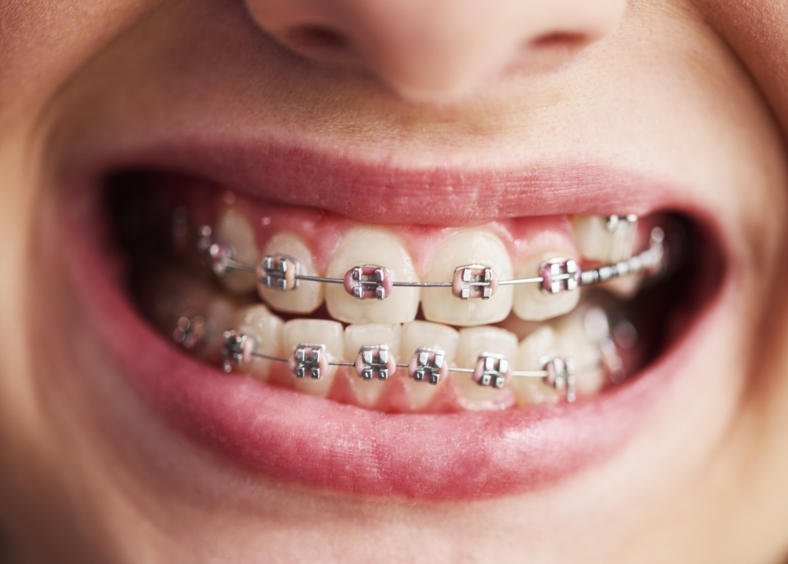
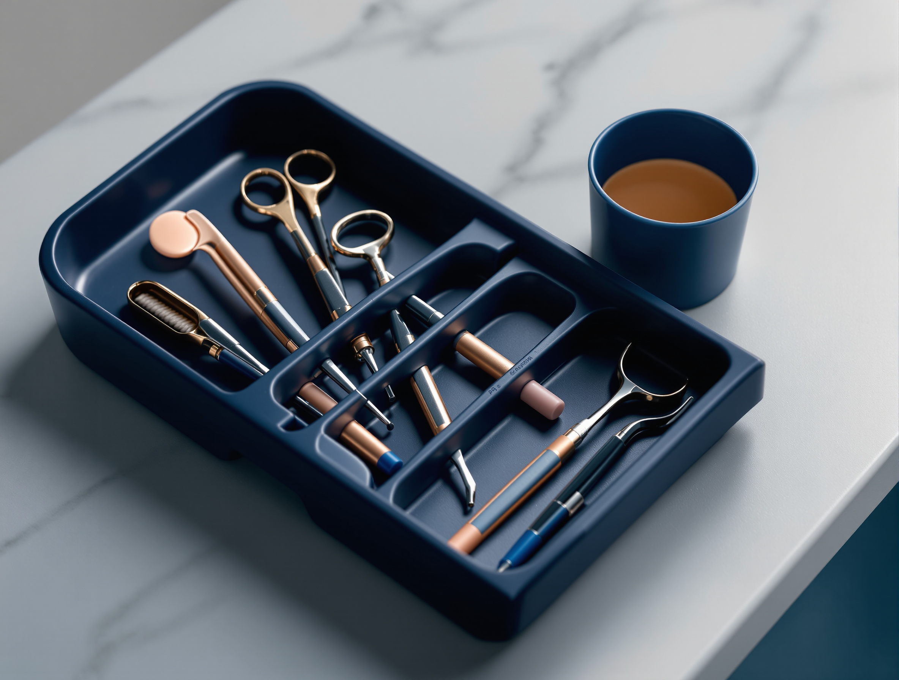

Dental Sealants in the Philippines.
Dental sealants, pediatric dentistry
A protective coating flowed into the grooves of your child's back teeth.
Dental sealants, pediatric dentistry
A protective coating flowed into the grooves of your child's back teeth.
The first consultation is free, and it tells you which teeth are ready for one and which are not. Confirm current consultation terms with the clinic before you book.
Six stages, which is the fewest on any treatment page here.
Nothing has been left out to make it short. This is simply a small procedure, and a page that dressed it up as a major one would be lying with its length before it lied with a word.
Look closely at a back tooth and you will see a pattern of grooves running across the chewing surface.
On some children those grooves are shallow. On others they are deep, narrow fissures, and the tip of a toothbrush bristle is wider than the opening. Food and bacteria go in. The brush does not follow. That is why most childhood decay starts on the biting surfaces of the first adult back teeth rather than anywhere else in the mouth.
A sealant closes those grooves. It is a flowable resin, painted into the clean, dry fissure system and hardened with a curing light in seconds, leaving a smooth top surface a brush can actually clean. Glass ionomer is used instead in some situations, usually where the surface will not stay dry enough for resin to bond, and it releases fluoride as a secondary benefit.
Nothing is drilled and nothing is removed. A filling repairs damage that has already happened. A sealant goes onto a healthy tooth to prevent the damage in the first place, which makes it the least invasive item on this entire site. If your child needs a filling, that is a different treatment and you will be told so at the examination rather than after.
Next
Stage 02, which teeth are candidates, at what age, and the five situations where the honest answer is to wait or to do something else.
The usual timing is the first permanent molars, at around age six, and the second set at around age twelve. Premolars are done where the grooves warrant it.
They are worth most in a child who has already had decay, who has deep fissures, who eats or drinks sugar frequently, or who finds thorough brushing difficult.

A fixed appliance makes the whole mouth harder to clean for the next two years, so a teenager heading into one is a straightforward candidate.
The five honest limits
Next
Stage 03, the appointment itself, step by step, and the one step nobody should hurry.
The whole appointment takes about 10 to 15 minutes per tooth. There is no injection, no drilling, and nothing a child needs to brace for.
Step 03 is the one that is never hurried. Keeping the tooth dry is what decides whether the sealant is still there in two years, and a clinician who rushes it is saving ninety seconds at the cost of the whole procedure.
| Step | What happens | How long |
|---|---|---|
| 01 Examination | The dentist checks which teeth have erupted, how deep the fissures are, and whether any already have decay. Radiographs only where they are needed to see between the teeth. You are told which teeth are candidates today and which should wait. | 10 to 15 minutes |
| 02 Cleaning the surface | The biting surface is cleaned so the sealant bonds to enamel rather than to a film of plaque. | 2 to 3 minutes per tooth |
| 03 Isolation and drying | Cotton rolls or a rubber dam keep the tooth dry. This step decides whether it lasts, so it is not hurried. | 2 minutes |
| 04 Etching | A mild acid gel is applied to the enamel to give the resin a surface to grip, then rinsed off and the tooth dried again. | About 20 seconds |
| 05 Placing it | The resin is flowed into the grooves with a fine applicator so that it fills them rather than bridging them. | 1 to 2 minutes |
| 06 Curing | A blue curing light hardens the resin. It is set immediately, and your child can eat straight afterwards. | 20 to 40 seconds |
| 07 Bite check | The sealed surface is checked against the opposing tooth and adjusted if it feels high. | 2 minutes |
| 08 Recall | Each one is inspected for wear and chipping and topped up when required. | Every 6 months |
Next
Stage 04, who does this, and a technology section that spends most of its length telling you what is not used.
This is placed by a pediatric dentistry specialist, and the difference is not manual skill on a two-minute procedure.
It is judgement and handling: knowing which groove is stained and which is decayed, knowing when a tooth is not dry enough, and being able to get a nervous six-year-old to sit still without turning the visit into something they will remember badly for the next decade.
Sealing a tooth is a low-technology procedure and this page will not pretend otherwise.
It needs a clean, dry tooth, a good light and a steady hand. Naming an expensive machine that has nothing to do with it would tell you nothing about whether your child's teeth will be sealed well.
If the examination finds decay that has to be restored, or if crowding suggests the orthodontist should look early, those clinicians work in the same practice, so your child is not sent elsewhere for the next step.

What the named systems do here, and do not
Next
Stage 05, the money: an anchor figure, the three things that move it, and how payment works here.
Per tooth. Anchored to published market ranges, not to an Elevate price list.
Every peso amount on this page is representative and anchored to published market ranges rather than to an Elevate price list. Elevate quotes your own figure per treatment, after a clinical assessment.
What moves the final figure
The exact figure is confirmed at consultation, after an examination, and it is given to you in writing before treatment starts.
How you pay
Elevate Dental does not accept HMO or dental insurance. All treatment is self-pay.
HMO coverage cannot be used for dental treatments at our clinics. Payment is by cash, bank cheque, bank transfer, debit or credit card, or QR payment.
Which teeth are ready is decided by what has actually erupted in your child's mouth, so the only way to know is an examination.
Next
Stage 06, the last one: the questions parents actually ask, and what to do when one chips.
Before you book
Usually soon after the six-year molars arrive, and again around age twelve when the second set comes through. The right answer for your child is decided by what has actually erupted, which is what the examination looks at.
There is no injection and no drilling. Your child will feel the tooth being cleaned and dried, will taste the etching gel briefly, and will need to keep their mouth open for a few minutes. Most children find it one of the easier appointments they will have.
Resin sealants have been in routine clinical use for decades and are placed in very small quantities on the outer surface of enamel. If you have specific concerns about materials, raise them at the consultation and you will get a straight answer, including the option of a glass ionomer alternative.
Yes, where an adult still has deep, unfilled fissures and a history of decay. It is less common because most adult molars have either been restored already or have proven themselves over decades.
Afterwards
Commonly several years, depending on the bite and on how hard your child chews. They wear down gradually rather than failing suddenly, which is why they are inspected at each six-month recall and repaired when needed.
Bring your child in. A lost or chipped one is replaced, and it is a short appointment. That is not a treatment failure, it is wear.
Yes, and to floss. This protects a single face of a single tooth. The sides between the teeth and along the gum line are still exposed, and they are where the decay it does not prevent shows up.
No. They do different jobs. This physically blocks the grooves on the chewing surface. Fluoride hardens the whole enamel surface against acid. Children at higher decay risk usually have both.
Aftercare
The first consultation is free. Your child is examined, and you are told exactly which teeth would benefit, which should wait, and which need something else instead, with the figure in writing before anything is done.
The route ends here on purpose, and it ended sooner than the other treatment pages on this site because there was less to say and no reason to pad it.
Outcome